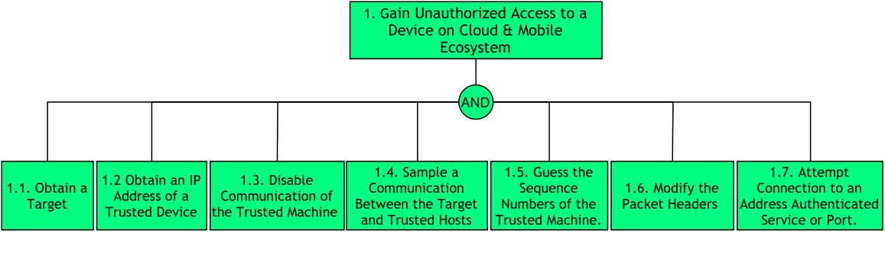
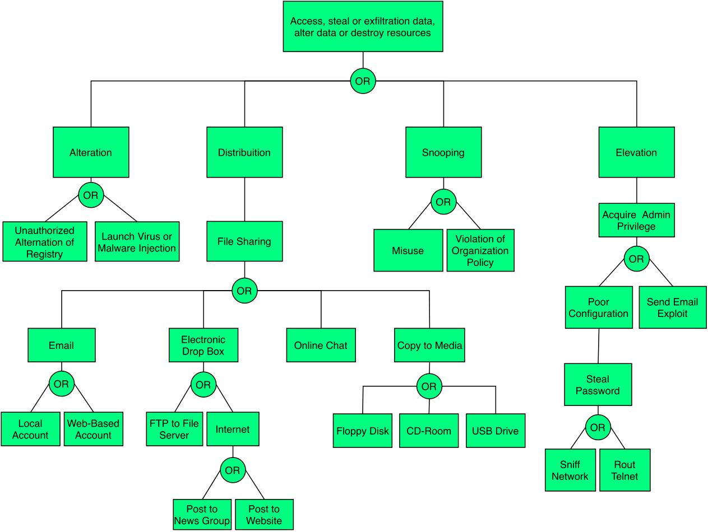
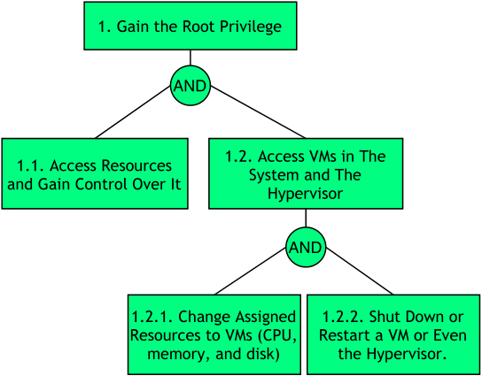

| Mobile Plataform | Web Application ; Hybrid Application |
| Application domain type | m-Health |
| Authentication | Yes |
| Authentication schemes | Biometric-based authentication ; Channel-based authentication ; Factors-based authentication |
| Has DB | Yes |
| Type of data storage | SQL |
| Which DB | MySQL |
| Type of data stored | Personal Information ; Confidential Data ; Critical Data |
| User Registration | Yes |
| Type of Registration | The users will register themselves |
| Programming Languages | HTML5 ; PHP |
| Input Forms | Yes |
| Upload Files | Yes |
| The system has logs | Yes |
| The system has regular updates | Yes |
| The system has third-party | Yes |
| System Cloud Environments | Public Cloud |
| Hardware Specification | Yes |
| HW Authentication | Basic Authentication (user/pass) |
| HW Wireless Tech | 5G ; 3G ; 4G/LTE ; Wi-Fi ; Bluetooth |
| Data Center Phisical Access | Yes |
| Mobile Plataform | Web Application ; Hybrid Application |
| Application domain type | m-Health |
| Authentication | Yes |
| Authentication schemes | Biometric-based authentication ; Channel-based authentication ; Factors-based authentication |
| Has DB | Yes |
| Type of data storage | SQL |
| Which DB | MySQL |
| Type of data stored | Personal Information ; Confidential Data ; Critical Data |
| User Registration | Yes |
| Type of Registration | The users will register themselves |
| Programming Languages | HTML5 ; PHP |
| Input Forms | Yes |
| Upload Files | Yes |
| The system has logs | Yes |
| The system has regular updates | Yes |
| The system has third-party | Yes |
| System Cloud Environments | Public Cloud |
| Hardware Specification | Yes |
| HW Authentication | Basic Authentication (user/pass) |
| HW Wireless Tech | 5G ; 3G ; 4G/LTE ; Wi-Fi ; Bluetooth |
| Data Center Phisical Access | Yes |
In this type of attack an active man listen and change communications between Mobile Device and Cloud. In other hand, in this attack an intruder enters in the ongoing conversation between sender and the receiver and makes them believe that conversation is taking place between them only.
This type of attack occurs whenever an attacker intends to intercept communications in order to interpret or alter the original data in transit between the sender and the receiver establishing a conversation.
The attacker generally and depending on whether the communication situation is encrypted or not, is able to modify the cryptographically unprotected communication or modify the cryptographically protected communication. More specifically, it will have the following powers:
To ensure that the mobile application is resilient or immune to malicious MitM attacks, it is recommended that the measures described in the good practice report and the security tests present in the full report are followed to ensure authenticity, integrity, privacy and authenticity of the data.
In short, Cross Site Scripting (XSS) allows an attacker to execute a browser script bypassing access control mechanisms such as the same origin policy. During this attack a malicious script is injected into web content and user considering it to be authentic executes it over its own machine, thus giving either control of the machine or exposure of confidential information to the attacker.
Being an attack that exploits vulnerabilities in web applications, the attacker in this type of attack executes malicious database claims, exploiting improper validation of data flowing from the user to the database. The attacker's goal is to access the intended party's confidential data by inserting malicious code into the user's web page in order to redirect them to their site. There are two ways to forge this type of attack:
To ensure that the mobile application is resilient or immune to XSS attacks, it is recommended that the measures described in the good practice report and the security tests present in the full report are followed to ensure authenticity, integrity, privacy and authenticity of the data.

DNS poisoning attack is tricking the domain name server (DNS) to send traffic in the wrong direction by modifying DNS cache content maliciously. The cloud customers must ensure that cloud service providers are taking proper steps to secure their DNS infrastructure.
In this kind of attack, the contents of the cookie are changed to get access to an unauthorized application or web page. The cookie contains sensitive credentials about user's data and when the hacker gains access to these contents then he also gains access to the content within these and can perform illegal activities.
In order to ensure that the mobile application is resilient or immune to the DNS Poisoning attacks, it is recommended that the measures described in the good practice report and the security tests present in the full report are followed.

In this type of attack, one of the strategies used by the attackers, after coding the malicious links, is to take them to phishing sites or execute fraudulent codes. In addition, in order to end this type of attack, the attackers often print the malicious QR codes on small stickers that are pasted on pre-existing QR codes. On the other hand, attackers often change selected modules from white to black and vice versa in order to replace the original encoded content.
QR code-based attack is defined as an attack that attempts to lure victims into scanning a QR code that directs them to malicious websites. The key idea behind QR code attacks is that victims might trust the web page or the printed material on which the QR code is displayed, and assume that the associated code is harmless. In addition, attackers use malicious QR codes to direct users to fraudulent web sites, which masquerade as legitimate web sites aiming to steal sensitive personal information such as usernames, passwords or credit card information.
To ensure that the mobile application is resilient or immune to malicious QR Code attacks, it is recommended that the measures described in the good practice report and the security tests present in the full report are followed to ensure authenticity, integrity and authenticity of the data.

CAPTCHAs were developed in order to prevent the usage of internet resources by bots or computers. They are used to prevent spam and overexploitation of network resources by bots. But recently, it has been found that the spammers (attackers) are able to break the CAPTCHA. In this case, we will be in the presence of an attack of this nature, Captcha Breaking.
In this type of attacks, the attacker can break the CAPTCHAs by using an audio system, can read the CAPTCHAs by using speech to text conversion software and can also break image-based scheme and video-based scheme.
In order to ensure that the mobile application is resilient or immune to the CAPTCHA Breaking attacks, it is recommended that the measures described in the good practice report and the security tests present in the full report are followed.
In this type of attack, an attacker could provide malicious input with a clever mix of characters and meta characters from a form (e.g., login form) to alter the logic of the SQL command.
Definition
Structured Query Language (SQL) Injection Attack is a code injection technique commonly used to attack web applications where an attacker enters SQL characters or keywords into an SQL statement through superuser input parameters for the purpose. to change the logic of the desired query.
Attacker Powers
To ensure that the mobile application is resilient or immune to SQLi attacks, it is recommended that the measures described in the good practice report and the security tests present in the full report are followed to ensure authenticity, integrity, privacy and authenticity of the data.

In a DoS attack scenario, the attacker attempts to disrupt the network or disable services provisioned by a server by sending uninterrupted data packets to the target server and without changing nodes, data packets, or decrypting encrypted data. Typically, these data packets take up bandwidth and consume server resources.
In such attacks, the attacker attempts to prevent a service or feature that is signed by authorized users from being released by launching various types of floods - SYN flooding, User Datagram Protocol (UDP) flooding, Internet Control Message Protocol (ICMP) attacks ) flooding, etc - on the server.
In order to ensure that the mobile application is resilient or immune to the DoS attacks, it is recommended that the measures described in the good practice report and the security tests present in the full report are followed.

Distributed Denial of Services (DDoS) is an enhanced DoS attack type, originating from multiple network attack surfaces that were previously compromised to disrupt the services or resources provided by the target server. It differs from DoS in that it generates more traffic, so that the targeted server cannot handle requests.
The DDoS attack attempts to make a service unavailable to intended users by draining the system or network resource. Attackers can now launch various DDoS attacks, including resource-focused attacks (eg, network bandwidth, memory, and CPU) and app-focused attacks (eg, mobile applications, database service) from almost every attack. places.
n order to ensure that the mobile application is resilient or immune to the DDoS attacks, it is recommended that the measures described in the good practice report and the security tests present in the full report are followed.

This type of attack is carried out by attackers who use applications that can capture data packets in transit over a network, and if they are not heavily encrypted, can be read or interpreted. The goal of the attacker is to spy on all kinds of conversations and recordings and to listen to communication channels.
This type of attack consists of implant eavesdropping tools in specific network for spying on communication channels, capturing the network traffic behavior and getting the network map. Eavesdropping is dangerous threat that leads to break down the integrity and confidentiality which causes financial and personal failures. There are several ways to get a sniffing attack on a smartphone, as there is a vulnerability in GSM's encryption function for call and SMS privacy, A5 / 1 (it can be stopped second). This vulnerability puts all GSM subscribers at risk of sniffing attacks.
In this type of attack the attacker uses DNS to convert the domain name to an IP address for the purpose of accessing the user's confidential data. On the other hand, sender and a receiver get rerouted through some evil connection.
In DNS reflection attacks, attackers send DNS requests toward multiple open DNS servers with spoofed source address of the target, which results in a large number of DNS responses to the target from DNS servers. Since the cloud has its own DNS servers to answer DNS queries from hosted tenants, there should not be any DNS responses from the Internet to the cloud. Therefore, any activity of inbound DNS responses may signify a potential DNS reflection attack. Inbound DNS reflection attacks often come from up to 6K distinct sources (with 1500 byte full-size packets). We only observed outbound DNS responses from a single VIP hosting a DNS server at 5666 packets per second for a couple of days repeatedly.
In order to ensure that the mobile application is resilient or immune to the DNS attacks, it is recommended that the measures described in the good practice report and the security tests present in the full report are followed.
IP address is reassigned and reused by other customer. The address still exists in the DNS cache, it violating the privacy of the original user.
Each node of a network has an IP address which is allocated to a particular user when that user leaves the network, the IP address associated with him is assigned to a new user. The chances of accessing previous user data by the new user exist as the address still exist in DNS cache and hence the data belonging to one person can be accessed by another.
To ensure that the mobile application is resilient or immune to malicious Reused IP Address attacks, it is recommended that the measures described in the good practice report and the security tests present in the full report are followed to ensure authenticity, integrity, privacy and authenticity of the data.

In phishing attack, an adversary sets up a fake URL identical to real Web application fooling the users to enter a valid credentials and certificates.
Phishing is the attempt to acquire sensitive information or to make somebody act in a desired way by masquerading as a trustworthy entity in an electronic communication medium. They are usually targeted at large groups of people. Phishing attacks can be performed over almost any channel, from physical presence of the attacker to websites, social networks or even cloud services. On the other hand, phishing attacks are typically fraudulent email messages which directs to spoofed website. In PaaS cloud environment, these attacks affect both enterprise and users. This is a type of social engineering attack. These attackers convince the customers to reveal their most important data like password or other sensitive information by using bogus web pages, emails, or bloggers.
To ensure that the mobile application is resilient or immune to malicious Phishing attacks, it is recommended that the measures described in the good practice report and the security tests present in the full report are followed to ensure authenticity, integrity, privacy and authenticity of the data.

In a nutshell, in a botnet attack scenario the attacker hijacks a set of mobile devices, creating a network of remote controlled zombie devices. This network is called Botnet, from which various types of attacks can be carried out, such as denial of service attacks, malware distribution, phishing, etc.
Definition
A botnet is a set of compromised mobile devices. A necessary condition for these devices to be compromised is their infection by malware. This allows attackers/hackers to remotely control this botnet and launch other types of attacks, such as DoS, Phishing, malware injection, etc.
Attacker Powers
It is an attacking technique used against XML-based applications to modify or compromise their normal operation.
XML Injection (XMLi) attacks are carried out by injecting pieces of XML code along with malicious content into user inputs in order to produce harmful XML messages. The aim of this type of attacks is to compromise the system or system component that receives user inputs, making it malfunction (e.g. crash), or to attack other systems or subsequent components that process those injected XML messages. This type of attack can be classified into 4 categories:
To ensure that the mobile application is resilient or immune to Spoofing attacks, it is recommended that the measures described in the good practice report and the security tests present in the full report are followed to ensure authenticity, integrity, privacy and authenticity of the data.
In a nutshell, spoofing attacks consist of spoofing the caller ID in order to impersonate a trusted entity and thus obtain confidential information in a disguised manner.
In this type of attack, the attacker can spoof the "Caller ID" and impersonate him as a legitimate user, i.e., an attacker could spoof the "Caller ID" and impersonate a trusted party. Recent studies have also shown how to spoof MMS messages that appeared to be messages from a number that operators use to send alerts or update notifications. In addition, base stations can also be counterfeited. On the other hand, there is also the mobile application spoofing attack, which consists of an attack where a malicious mobile application mimics the visual appearance of another one. The goal of the adversary is to trick the user into believing that she is interacting with a genuine application while she interacts with one controlled by the adversary. If such an attack is successful, the integrity of what the user sees as well as the confidentiality of what she inputs into the system can be violated by the adversary.
To ensure that the mobile application is resilient or immune to Spoofing attacks, it is recommended that the measures described in the good practice report and the security tests present in the full report are followed to ensure authenticity, integrity, privacy and authenticity of the data.

A malicious user can start or redirect the migration process to a different network in which he has access or untrusted host, or it can just be copied and used elsewhere, which compromise the VM with the passwords, credentials on it and in case of coping it makes it difficult to trace the attacker.
VMs roll back to their previous state if an error occurs. Unfortunately, this factor can re-expose them to security vulnerabilities, and attackers can gain benefit to attack on this compromised hypervisor. It is important to protect the data during migration. In fact, this is the defending of data privacy and integrity from various network attacks during migration. Live migration might be susceptible to many attacks like ”man-in-the-middle”, ”denial-of-service” and ”replay. The data during the migration can be sniffed or tampered easily as it is not encrypted.
To ensure that the mobile application is resilient or immune to VM Migration attacks, it is recommended that the measures described in the good practice report and the security tests present in the full report are followed to ensure authenticity, integrity, privacy, confinement, and authenticity of the data.

This type of attacks ocurre when there is a malicious entity (client, employee, Hypervisor, Cloud Provider/Broker, etc.) takes advantage of its privileges to covertly carry out any malicious activity such as information theft and data destruction or physical infrastructures.
Malicious Hypervisor, Malicious Clients, Malicious Cloud Provider/Broker, etc. are all the other terms which can also be used as an alternative to malicious insiders. This kind of attack occurs from client to server when the person, employee or staffs who know how the system runs, can implant malicious codes to destroy everything in the cloud system.
In order to ensure that the mobile application is resilient or immune to Malicious Insiders attacks, it is recommended that the measures described in the good practice report and the security tests present in the full report are followed.

This type of attack occurs when an application escapes from the VM and gains control of VMM, as it escapes the VM privilege and obtains the root privilege.
VM escape is where an application running on a VM can directly have access to the host machine by bypassing the hypervisor, being the root of the system it makes this application escape the VM privilege and gain the root privilege. In this type of attack the attackers attempt to break down the guest OS in order to access the hypervisor or to penetrate the functionalities of other guest OS and underlying host OS. This breaking of the guest OS is called as escape. If the attackers escapes the guest OS it may compromise the hypervisor and as a result it may control over the entire guest OS. In this way the security breach in single point in hypervisor may break down all the hypervisor. If the attacker controls the hypervisor, it can do anything to the VM on the host system.
To ensure that the mobile application is resilient or immune to VM Escape attacks, it is recommended that the measures described in the good practice report and the security tests present in the full report are followed to ensure authenticity, integrity, privacy, authenticity and confinement of the data.

Side-channel attacks are used to extract cryptographic keys from a victim device or process in a virtualized layer of the cloud ecosystem where a Cross-VM attack exploits the nature of multi-tenancy, which enables that VMs belonging to different customers may co-reside on the same physical machine.
The side-channel attack takes advantage of low-bandwidth message channels in a system to leak sensitive security information. There is no doubt that this type of attack exists and is real for today's computer systems, including modern smartphones and tablets. Here we highlight the cache-based side-channel attacks that have been used to steal cryptographic information from a single OS. Furthermore, the weak link is in the fact that cryptographic algorithms usually have data-dependent memory access patterns, giving the possibility of being revealed by the observation and statistical analysis of hits / errors from the associated cache. Recent research has shown attackers can build up cross-VM side channels to obtain sensitive information. However, currently these channels are mostly based on shared CPU cache, networks, CPU loads and so on. These attacks are generally categorized into one of three classes:
In order to ensure that the mobile application is resilient or immune to the side-channel attacks, it is recommended that the measures described in the good practice report and the security testing present in the full report are followed.
Cross VM Attacks Diagram

In this type of attack an attacker preforms physical modifications on the hardware where the software is implemented.
This type of attack occurs whenever an unauthorized user has physical access to the device. When this access is realized, it is possible to loss, leakage, access or unintentionally disclose of the data or applications to unauthorized users, if the mobile devices are misplaced, lost or theft.
To ensure that the mobile application is resilient or immune to malicious Tampering attack, it is recommended that the measures described in the good practice report and the security tests present in the full report are followed to ensure authenticity, integrity, privacy and authenticity of the data.